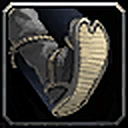

Find Treasure




Probably the best Alliance race to 30: Mace Specialization, Stoneform, Big Game Hunter (extra damage to beasts).


Elune's Light gives 10% crit for 15s; passive speed and dodge; Wisp Spirit helps after death.


Not covered in the guide.


Not covered in the guide.


5% more damage to beasts, Berserking, Rapid Regeneration and Regeneration: four helpful buffs for leveling.


Not covered in the guide.


Not covered in the guide.


Not covered in the guide.